De koorleden
Dit zijn de mannen van Eendracht
Drieënveertig zangers uit Swartbroek, Weert en Leudal, een dirigent en drie ondersteunende leden. Jaarlijks zijn er jubilarissen: een teken van grote trouw aan de vereniging.
Dirigent & bestuur
Wie het koor leiden
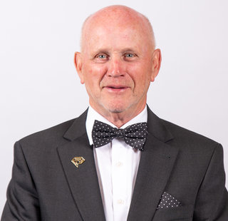
Paul Koolen
Dirigent
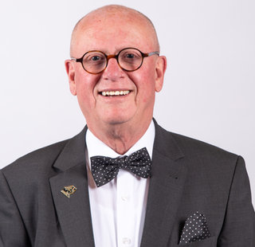
Jan Stals
Voorzitter
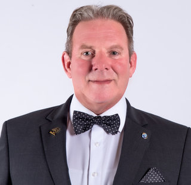
Gerard Kemper
Vice-voorzitter
Paul van de Laar
Secretaris
Paul van Geldorp
Penningmeester
Wiel Douven
Bestuurslid
Onze leden
De zangers
Johan Beerens
Bibliothecaris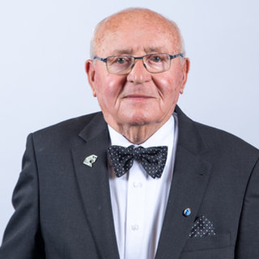
Bèr Boonen
John Bosch
Harrie Breukers
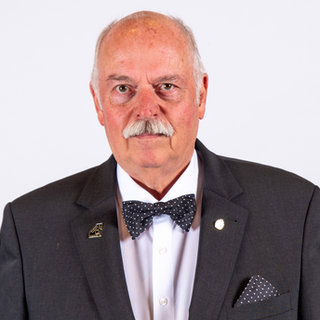
Ed van Bussel
Jan Custers
Jan van Dooren
Bart Douven
John Föster
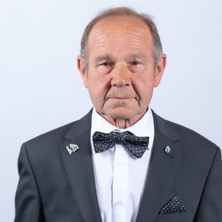
Frits Geelen
Jos Hanssen
Jan Heldens
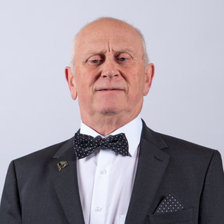
Ludo Hermans
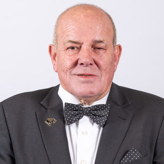
Ted van de Hurk
Egbert Jacobs
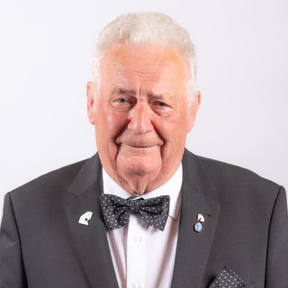
Jos Jacobs
Erelid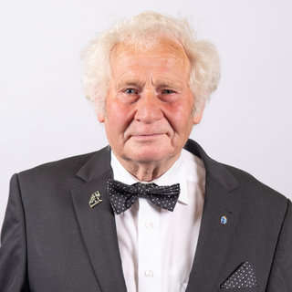
Pierre Jacobs
Harrie Kessels
Wim Koonen
Pierre Korsten
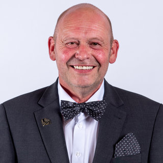
Fred Kuppens

Frits Lavell
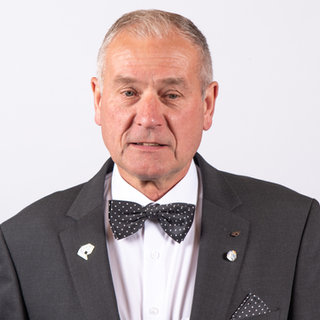
Piet Meuwissen
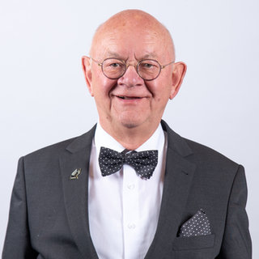
Bèr Peeters
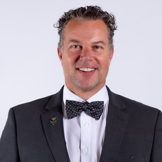
Marc Peeters
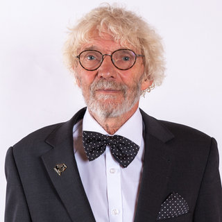
Wout Scheper
Lei van den Schoor
Erelid · Lid van verdiensteLeo Soudant
Ondersteunende leden
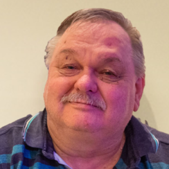
Jan Gijsen
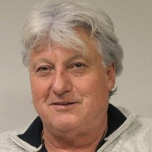
Rinus Smeets
Jan van Kilsdonk
Jubilarissen
Eindelijk in het zonnetje gezet
Op 14 mei 2022 konden de jubilarissen van 2020 eindelijk gehuldigd worden. Het feest stond gepland tijdens het Ceciliafeest van 2020, maar ging niet door vanwege corona, net als het Ceciliafeest van 2021. Het bestuur besloot de huldiging te doen zodra het kon. Voorzitter Jan Stals bezocht de jubilarissen vooraf om te horen waarom ze lid werden en hoe ze het zoveel jaren volhielden. Na de huldiging ging het feest door tot in de kleine uurtjes.
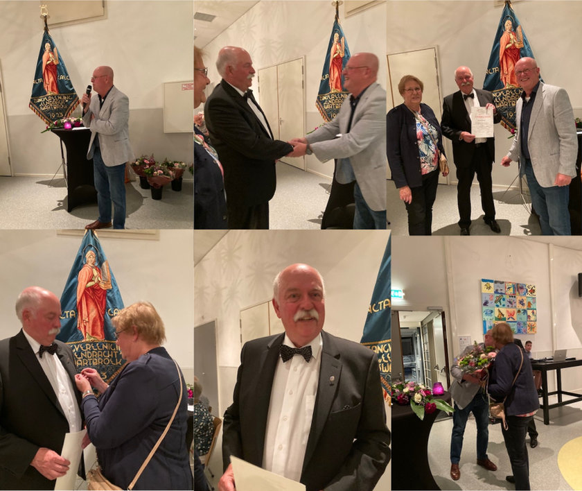
Bèr Boonen
40 jaar lid
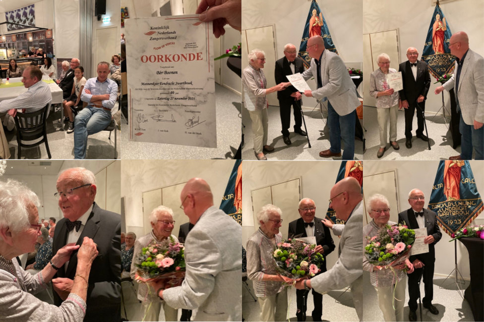
Ed van Bussel
25 jaar bij het koor
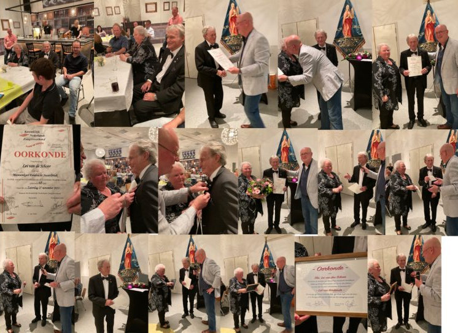
Jos Jacobs
50 jaar lid
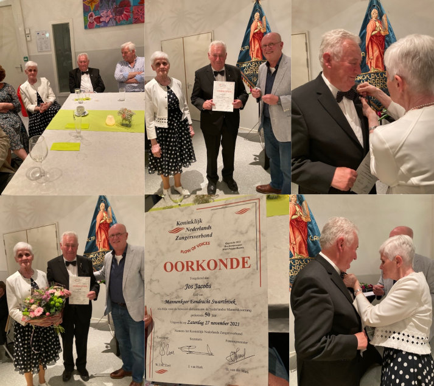
Lei van den Schoor
65 jaar lid, benoemd tot lid van verdienste
Recente jubilea
2025 · Lei van den Schoor, 70 jaar lid, benoemd tot erelid.
2024 · Frits Lavell en Harrie Kessels, 25 jaar lid.
2023 · Jan Gijsen en Hans Braun 40 jaar lid; René Hermans, Pierre Jacobs en Jan Nies 50 jaar lid; Jo Ramaekers 25 jaar lid.
Lees de verslagen van de Ceciliafeesten →In memoriam
We vergeten ze niet
René Hermans, lid sinds 1973, overleed in het voorjaar van 2026. Het koor luisterde op 13 mei zijn afscheidsdienst op, precies zoals hij het zelf had gewenst. Ere-dirigent Hans Braun, 25 jaar dirigent en 40 jaar lid, namen we op 4 oktober 2024 afscheid van in de Paterskerk.
Lees het afscheidswoord van de voorzitter →